Teatro Colón
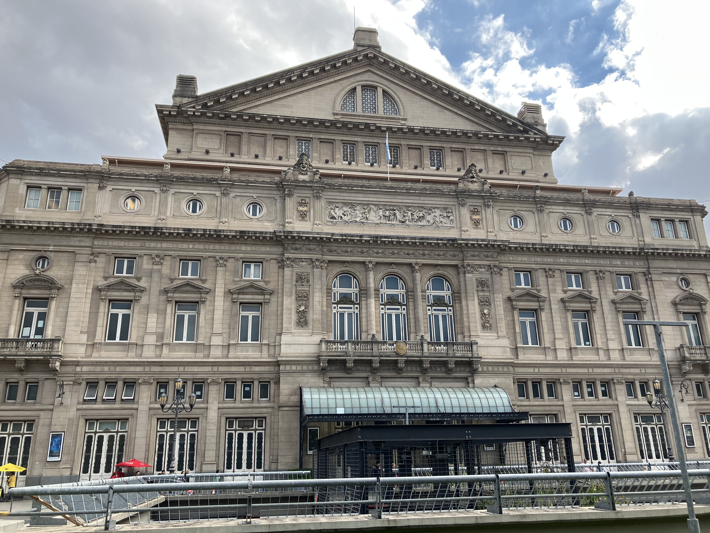
Architect: Francesco Tamburini, Víctor Meano, Jules Dormal
Location: Cerrito 628, Buenos Aires
Completed: 1908
Style: Eclecticism / Beaux-Arts
History
The Teatro Colón stands as one of the most celebrated opera houses in the world and a defining symbol of Buenos Aires’ cultural ambition. Its construction began in 1889 and passed through multiple architects before its grand inauguration in 1908. Since then, it has hosted legendary musicians, composers, and performers, becoming one of the most prestigious artistic institutions in Latin America.
Architecture
Designed with a remarkable blend of Beaux-Arts elegance, Italian Renaissance influence, and French academic classicism, the Teatro Colón reflects the grandeur of Europe’s great opera houses. Its monumental façade, refined interiors, marble staircases, and richly decorated halls create an atmosphere of exceptional sophistication, while its acoustics are considered among the finest in the world.
Legacy
Beyond its architectural beauty, the Teatro Colón represents Argentina’s cultural prestige and artistic identity. It remains an international reference for opera, ballet, and classical music, attracting the world’s greatest performers. For generations, it has symbolized the union of art, architecture, and national pride at the heart of Buenos Aires.
Gallery
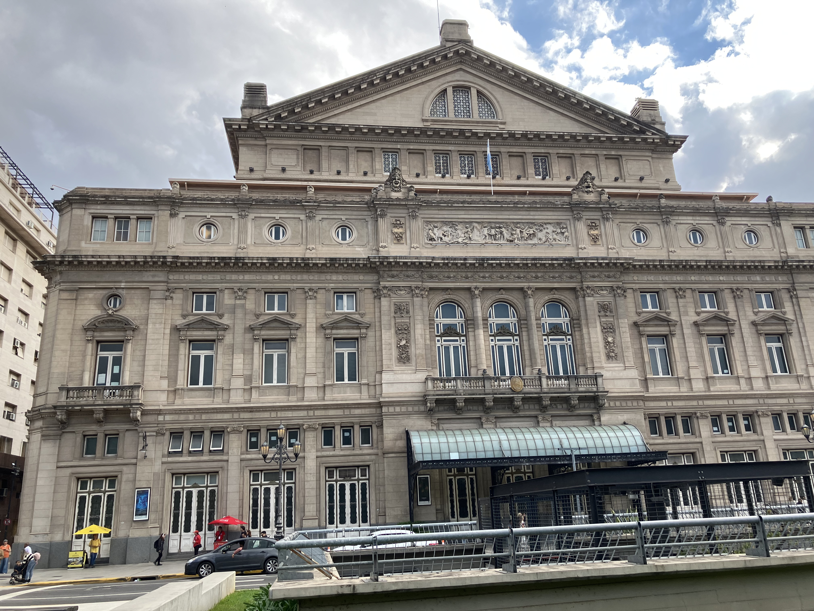
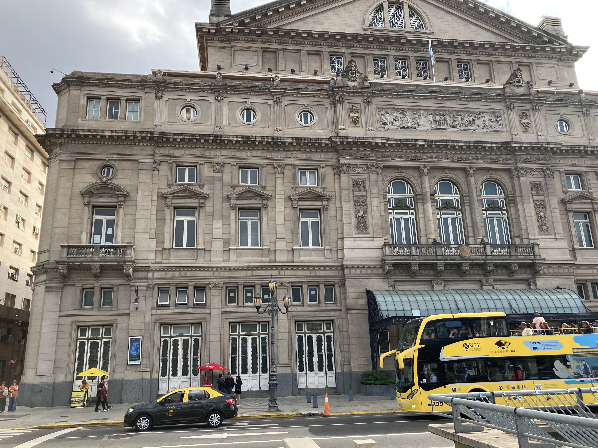
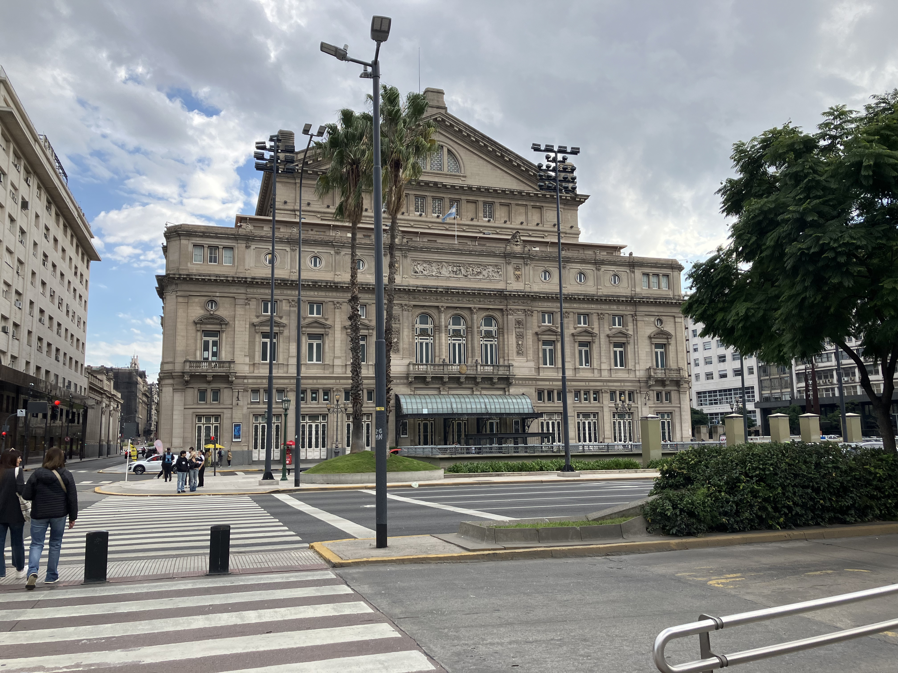
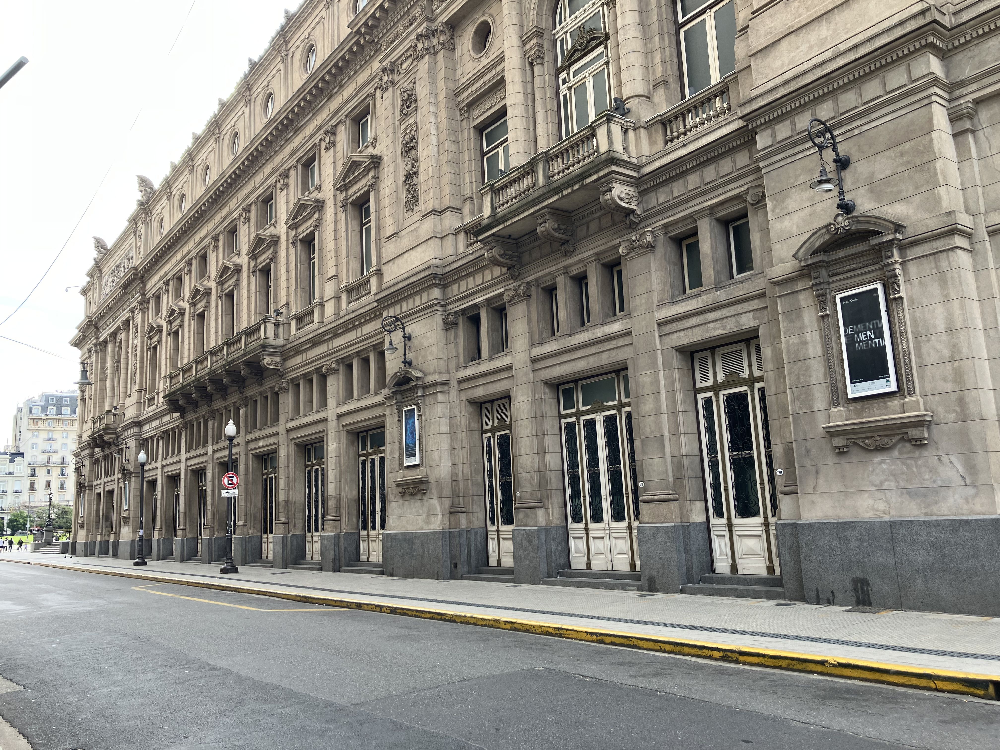
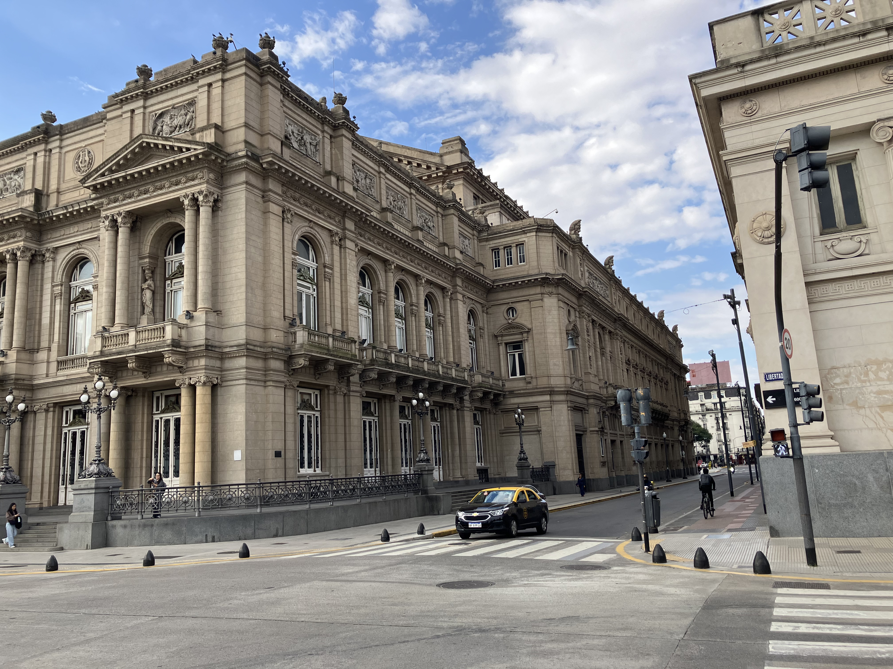
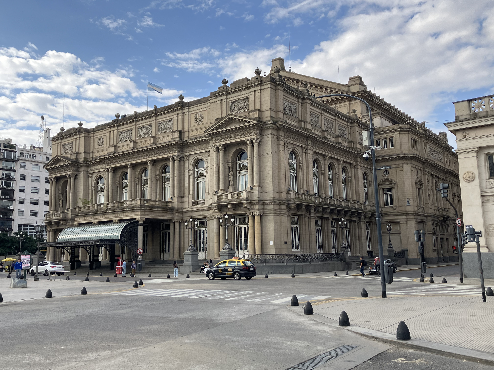
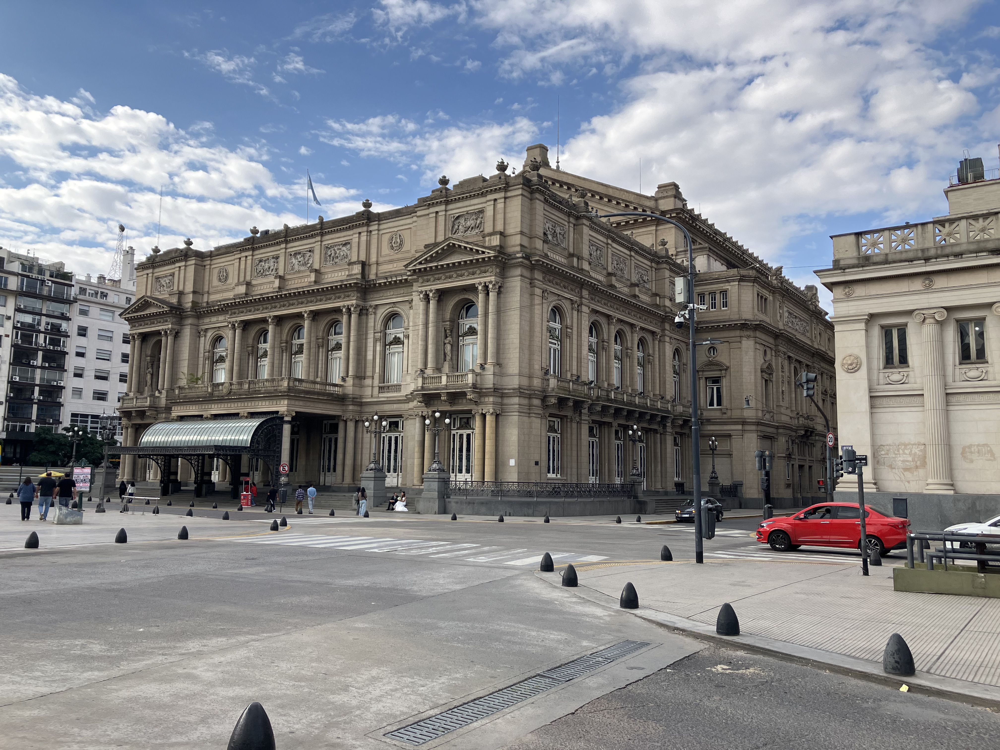
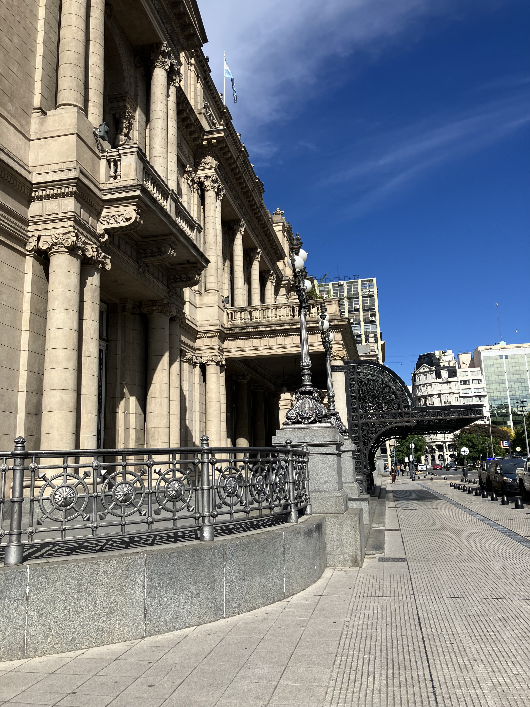
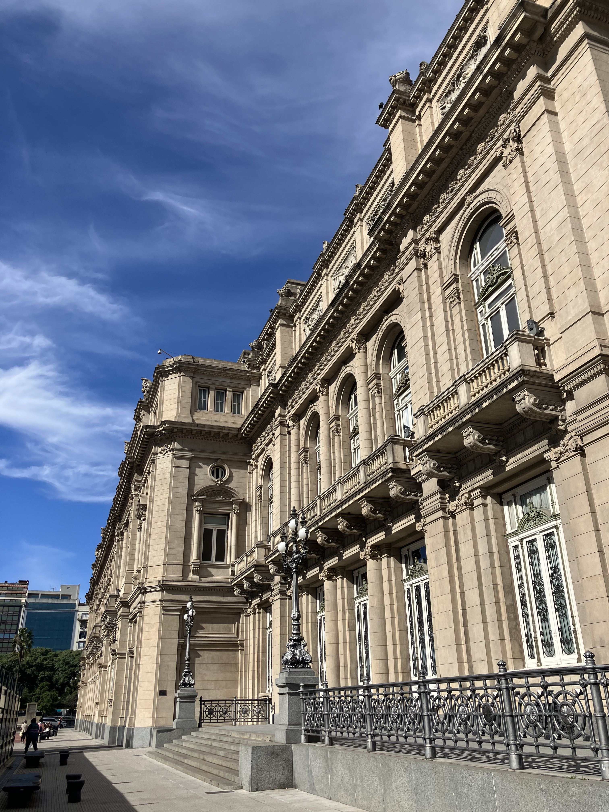
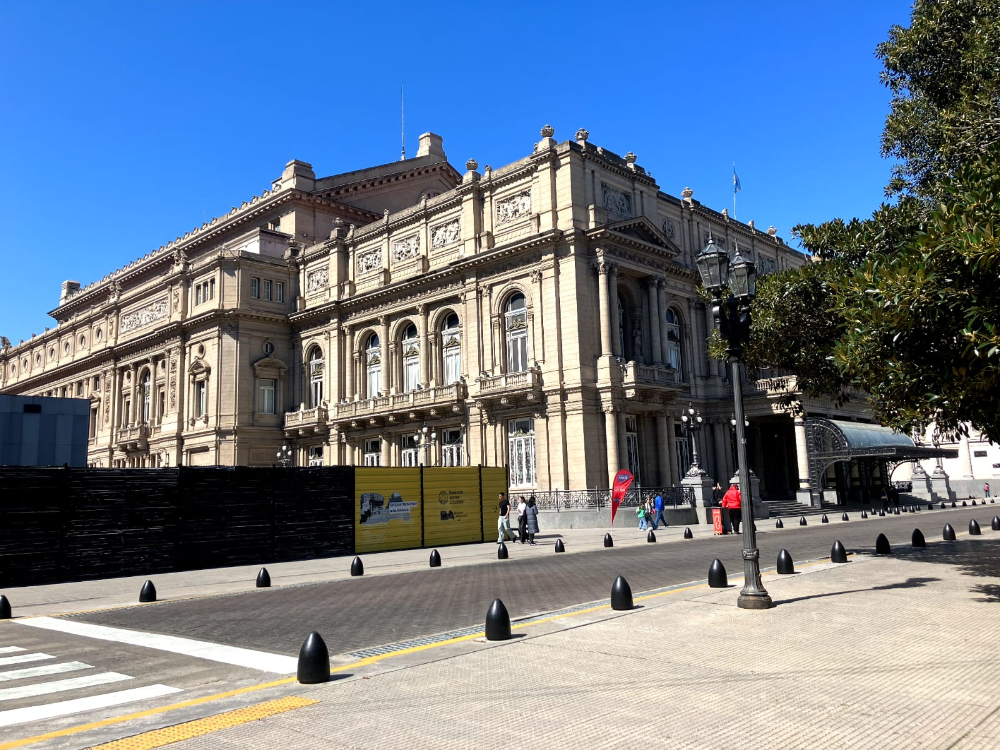
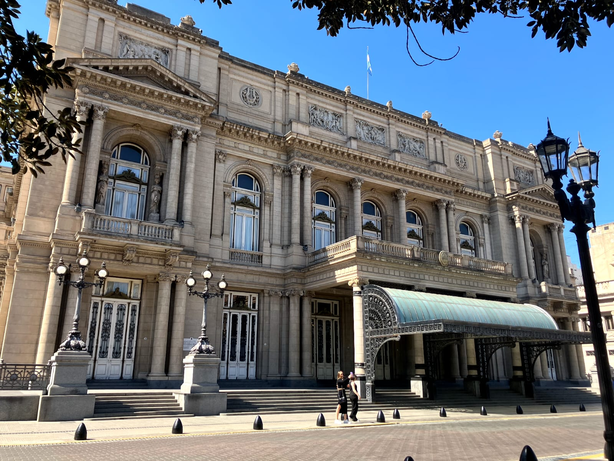